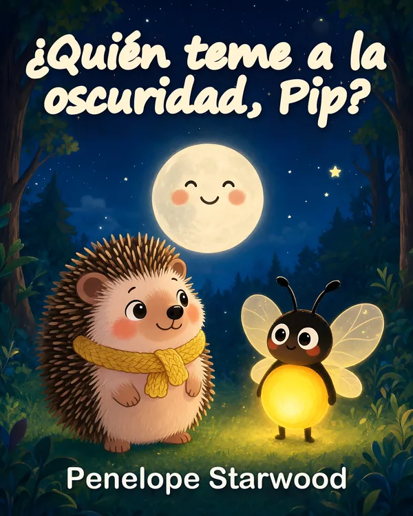

Álbum ilustrado · de 3 a 6 años
¿Quién teme a la oscuridad, Pip?
Paso a paso, la oscuridad da menos miedo.
Cuando el sol se esconde detrás de las colinas, el pequeño erizo Pip se ajusta la bufanda amarilla y se esconde bajo su manta de musgo. ¡La oscuridad es demasiado grande!
Entonces, una lucecita brilla en la puerta. Glow, la luciérnaga, quiere enseñarle muchas cosas: una mariquita sonriente sobre una hoja, la luna entre las ramas de un viejo roble, una piedrecita brillante en la hierba y un cielo lleno de estrellas.
Un tierno cuento para dormir sobre el valor que crece paso a paso, para todos los pequeños que tienen miedo a la oscuridad.
-
Edición española¿Quién teme a la oscuridad, Pip?Tapa blanda y ebook KindlePróximamente